Week 7: Spatial Linear Models
Helene Wagner and Yessica Rico
2020-06-08
Week7_vignette.Rmd1. Overview of Worked Example
a) Goals
This worked example shows:
- How to test regression residuals for spatial autocorrelation.
- How to fit a model with spatially autocorrelated errors (GLS).
- How to fit a spatial simultaneous autoregressive error model (SAR).
- How to perform spatial filtering with Moran eigenvector maps (MEM).
- How to fit a spatially varying coefficients model (SVC).
b) Data set
Here we analyze population-level data of the wildflower Dianthus carthusianorum (common name: Carthusian pink) in 65 calcareous grassland patches in the Franconian Jura, Germany (Rico et al. 2013):
- Dianthus: Spatial point data frame with population-level data (patch characteristics, grazing regime, genetic diversity, 15 alternative connectivity indices Si), included in package ‘LandGenCourse’. To load the data, type (without quotes): ‘data(Dianthus)’. For a definition of the variables, type: ‘?Dianthus’.
c) Required R libraries
All required packages should have been installed already when you installed ‘LandGenCourse’.
Note: the function ‘library’ will always load the package, even if it is already loaded, whereas ‘require’ will only load it if it is not yet loaded. Either will work.
library(LandGenCourse) #library(here) #libraryspdep) library(nlme) #library(lattice) #library(MuMIn) #library(gridExtra) #library(dplyr) library(spatialreg) library(ggplot2) library(ggmap) source(system.file("extdata", "panel.cor.r", package = "LandGenCourse"))
Package ‘spmoran’ not automatically installed with ‘LandGenCourse’:
if(!require(spmoran)) install.packages("spmoran", repos='http://cran.us.r-project.org') #require(spmoran)
2. Explore data set
We will model allelic richness ‘A’ as a function of the following predictors:
- IBD: connectivity index Si (‘Eu_pj’) based on Euclidean distance between source and focal patch. This represents a hypothesis of isolation by distance (IBD).
- IBR: connectivity index Si (‘Sheint_pj’) based on the number of continuously or intermittently grazed patches between source and focal patch. This represents a hypothesis of isolation by resistance (IBR). Specifically, this model assumes connectivity via sheep-mediated seed dispersal, where seeds are likely to be transported from patch to patch within the same grazing system (shepherding route). Seeds are assumed to disperse most likely to the next patch (in either direction) along the grazing route, and less likely to more remote patches along the route.
- PatchSize: Logarithm of calcareous grassland patch size in ha.
The connectivity indices Si were calculated for each focal patch i, integrating over all other patches j where the species was present (potential source patches) using Hanski’s incidence function.
a) Import data
data(Dianthus)
Allelic richness ‘A’ was not calculate for populations with < 5 individuals. Here we extract only the patches with ‘A’ values, and the variables needed, and store them in a data frame ‘Dianthus.df’.
b) Create a map
The functions in package ‘ggmap’ expect the projection to be Longitude/Latitude. We could start by transforming the projection of the Dianthus dataset:
Dianthus.longlat <- sp::spTransform(Dianthus, CRSobj = tmaptools::get_proj4("longlat")$proj4string) make_bbox(lon = Longitude, lat = Latitude, data = Dianthus@data, f = 0.2)
## left bottom right top
## 10.91051 48.90282 11.08951 49.07073Here, however, we use a shortcut as the ‘Dianthus@data’ dataframe already contains variables with Longitude and Latitude. We use these to define the bounding box for the map, extending the map extent by 20% (‘f=0.2’).
bbox <- make_bbox(lon = Longitude, lat = Latitude, data = Dianthus@data, f = 0.2)
Now we can obtain a stamen map for the study area from the internet and add points for the sampling sites. Here we use a terrain map.
Note: here we use two types of maps from the source ‘stamen’, which is freely available: a terrain map and a toner map. Starting in mid 2018, accessing maps from Google with ‘source = google’ requires an API key.
To plot the maps side-by-side, we first write each map into an object, then use the function gridExtra::grid.arrange to plot them on the same row. This works for a wide range of figures, including ggplot2 or trellis-type plots.
StamenMap.terrain <- ggmap(get_stamenmap(bbox, maptype = "terrain", zoom=12)) + geom_point(aes(x = Longitude, y = Latitude), data = Dianthus.longlat@data, colour = "black", size = 2) StamenMap.toner <- ggmap::ggmap(get_stamenmap(bbox, maptype = "toner", zoom=12, force = TRUE)) + geom_point(aes(x = Longitude, y = Latitude), data = Dianthus.longlat@data, colour = "black", size = 2) gridExtra::grid.arrange(StamenMap.terrain, StamenMap.toner, nrow=1)

As you can see from the terrain map, most sites lie on the steep slopes between an upper and a lower Jurassic plateau. A few sites lie at the forest edge on the upper plateau, typically in areas where the soil is too shallow to allow crop farming. With in the study area, all known sites were sampled. Additional sites are expected to be found mainly in the valley system in the Southwest.
There are three types of stamen maps: terrain, toner (black and white), and watercolor. Terrain and toner maps have three components each (background, labels, lines), which can be downloaded individually if needed. Hence, the argument ‘maptype’ has the following options:
- terrain
- terrain-background
- terrain-labels
- terrain-lines
- toner
- toner-2010
- toner-background
- toner-hybrid
- toner-labels
- toner-lines
- toner-lite
- watercolor
c) Explore correlations
When fitting linear models, it is always a good idea to look at the correlations first.
Dianthus.df <- data.frame(A=Dianthus@data$A, IBD=Dianthus@data$Eu_pj, IBR=Dianthus@data$Sheint_pj, PatchSize=log(Dianthus@data$Ha), System=Dianthus@data$System, Longitude=Dianthus@data$Longitude, Latitude=Dianthus@data$Latitude, x=Dianthus@coords[,1], y=Dianthus@coords[,2]) # Define 'System' for ungrazed patches Dianthus.df$System=as.character(Dianthus@data$System) Dianthus.df$System[is.na(Dianthus.df$System)] <- "Ungrazed" Dianthus.df$System <- factor(Dianthus.df$System, levels=c("Ungrazed", "East", "South", "West")) # Remove patches with missing values for A Dianthus.df <- Dianthus.df[!is.na(Dianthus.df$A),] dim(Dianthus.df)
## [1] 59 9pairs(Dianthus.df[,-c(5:7)], lower.panel=panel.smooth, upper.panel=panel.cor, diag.panel=panel.hist)
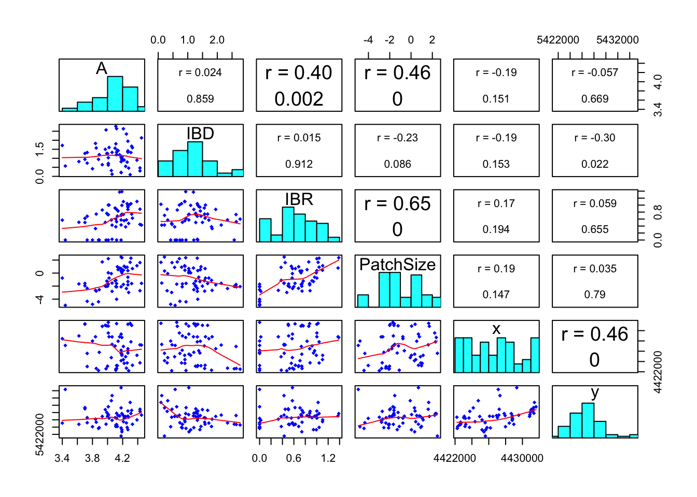
Questions:
- How strong is the association between ‘Eu_pj’ and ‘A’? What does this suggest about the hypothesis of IBD?
- How strong is the association between ‘Sheint_pj’ and ‘A’? What does this suggest about the hypothesis of sheep-mediated gene flow (IBR)?
- Which variable seems to be a better predictor of allelic richness: patch size ‘Ha’ or the logarithm of patch size, ‘PatchSize’?
- Is logHa correlated with ‘IBD’ or ‘IBR’?
- Are any of the variables correlated with the spatial coordinates x and y?
Do the three grazing systems, and the ungrazed patches, differ in allelic richness A? Also, let’s check the association between patch size and population size. Here we create boxplots that show the individual values as dots. We add a horizontal jitter to avoid overlapping points.
Boxplot1 <- ggplot(Dianthus.df, aes(x=System, y=A)) + geom_boxplot() + xlab("Grazing system") + ylab("Allelic richness (A)") + geom_jitter(shape=1, position=position_jitter(0.1), col="blue") Boxplot2 <- ggplot(Dianthus@data, aes(x=factor(pop09), y=log(Ha))) + geom_boxplot() + xlab("Population size class") + ylab("PatchSize (log(Ha))") + geom_jitter(shape=1, position=position_jitter(0.1), col="blue") gridExtra::grid.arrange(Boxplot1, Boxplot2, nrow=1)
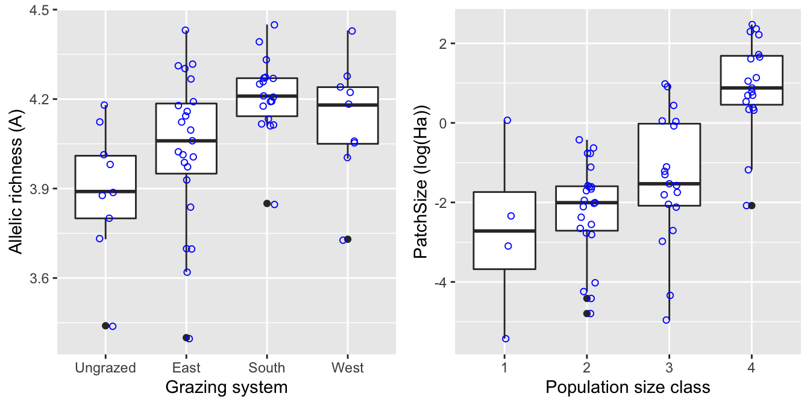
Even though the population size categories were very broad, there appears to be a strong relationship between populations size (category) and (the logarithm of) patch size.
Despite this relationship, connectivity models Si that only considered Dianthus carthusianorum presence/absence (‘pj’) in source patches ‘j’ were better supported than those Si models that took into account source patch area (‘Aj’) or population size (‘Nj’).
We can check this by calculating the correlation of allelelic richness ‘A’ with each of the 15 connectivity models ‘Si’ in the data set.
round(matrix(cor(Dianthus@data$A, Dianthus@data[,15:29], use="pairwise.complete.obs"), 5, 3, byrow=TRUE, dimnames=list(c("Eu", "Shecte", "Sheint", "Shenu", "Forest"), c("pj", "Aj", "Nj"))),3)
## pj Aj Nj
## Eu 0.024 0.207 0.098
## Shecte 0.375 0.273 0.369
## Sheint 0.403 0.196 0.369
## Shenu 0.135 -0.045 0.105
## Forest 0.137 0.168 0.138- Correlations with ‘A’ are highest for the two ‘IBR’ models that assume seed dispersal over a limited number of patches along shepherding routes (‘Shecte’ and ‘Sheint’. These two models include only continuously grazed, or both continuously and intermittently grazed patches, respectively.
- Correlations for models that take in to account population size (‘Nj’) are only slightly lower, whereas those that use patch size (‘Aj’) as a proxy for the size of the seed emigrant pool had lower correlations.
3. Test regression residuals for spatial autocorrelation
a) Fit regression models
Here we fit three multiple regression models to explain variation in allelic richness:
- mod.lm.IBD: IBD model of connectivity ‘Eu_pj’.
- mod.lm.IBR: IBR model shepherding connectivity ‘Sheint_pj’.
- mod.lm.PatchSize: log patch size and IBR model.
##
## Call:
## lm(formula = A ~ IBD, data = Dianthus.df)
##
## Residuals:
## Min 1Q Median 3Q Max
## -0.68545 -0.10220 0.03883 0.16178 0.36100
##
## Coefficients:
## Estimate Std. Error t value Pr(>|t|)
## (Intercept) 4.070960 0.064061 63.549 <2e-16 ***
## IBD 0.008454 0.047460 0.178 0.859
## ---
## Signif. codes: 0 '***' 0.001 '**' 0.01 '*' 0.05 '.' 0.1 ' ' 1
##
## Residual standard error: 0.2324 on 57 degrees of freedom
## Multiple R-squared: 0.0005563, Adjusted R-squared: -0.01698
## F-statistic: 0.03173 on 1 and 57 DF, p-value: 0.8593This model does not fit the data at all!
##
## Call:
## lm(formula = A ~ IBR, data = Dianthus.df)
##
## Residuals:
## Min 1Q Median 3Q Max
## -0.66844 -0.11251 0.03418 0.12219 0.41760
##
## Coefficients:
## Estimate Std. Error t value Pr(>|t|)
## (Intercept) 3.92306 0.05499 71.348 < 2e-16 ***
## IBR 0.25515 0.07672 3.326 0.00155 **
## ---
## Signif. codes: 0 '***' 0.001 '**' 0.01 '*' 0.05 '.' 0.1 ' ' 1
##
## Residual standard error: 0.2128 on 57 degrees of freedom
## Multiple R-squared: 0.1625, Adjusted R-squared: 0.1478
## F-statistic: 11.06 on 1 and 57 DF, p-value: 0.001547This model fits much better. Let’s check the residuals plots.
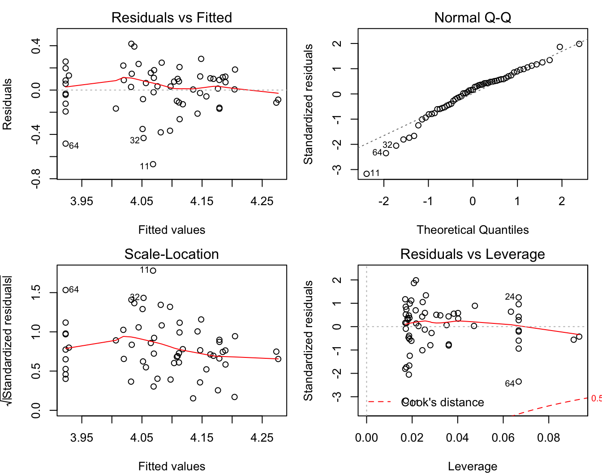
The residuals show some deviation from a normal distribution. Specifically, the lowest values are lower than expected.
##
## Call:
## lm(formula = A ~ PatchSize + IBR, data = Dianthus.df)
##
## Residuals:
## Min 1Q Median 3Q Max
## -0.68359 -0.08844 0.02538 0.11705 0.41705
##
## Coefficients:
## Estimate Std. Error t value Pr(>|t|)
## (Intercept) 4.05158 0.07781 52.069 <2e-16 ***
## PatchSize 0.04266 0.01888 2.260 0.0277 *
## IBR 0.11338 0.09709 1.168 0.2479
## ---
## Signif. codes: 0 '***' 0.001 '**' 0.01 '*' 0.05 '.' 0.1 ' ' 1
##
## Residual standard error: 0.2055 on 56 degrees of freedom
## Multiple R-squared: 0.2325, Adjusted R-squared: 0.2051
## F-statistic: 8.482 on 2 and 56 DF, p-value: 0.0006058This combinde model explains more variation in allelic richness than the IBR model alone. Moreover, after adding PatchSizes, the IBR term is no longer statistically significant!
Has the distribution of residuals improved as well?
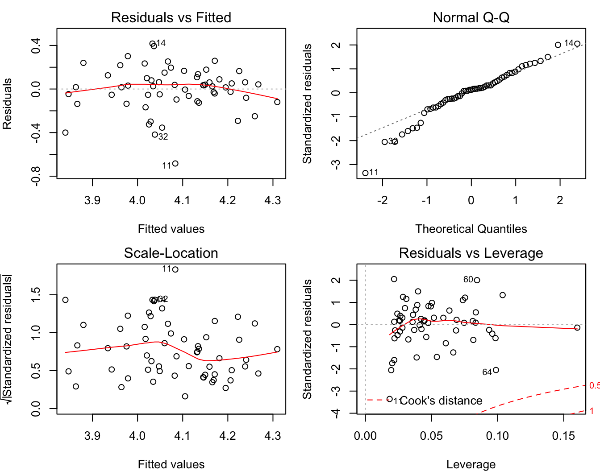
Not really!
b) Test for spatial autocorrelation (Moran’s I):
Before we interpret the models, let’s check whether the assumption of independent residuals is violated by spatial autocorrelation in the residuals.
To calculate and test Moran’s I, we first need to define neighbours and spatial weights. Here we use a Gabriel graph to define neighbours.
We define weights in three ways (see Week 5 video and tutorial for code explanation):
- listw.gab: 1 = neighbour, 0 = not a neighbour.
- listw.d1: inverse distance weights: neighbour j with weight 1/dij
- listw.d2: inverse squared distance weights: neighbour j with weight 1/dij^2
In each case, we row-standardize the weights with the option ‘style = “W”’.
Note: when using ‘graph2nb’, make sure to use the argument ‘sym=TRUE’. This means that if A is a neighbour of B, B is also a neighbour of A. The default is ‘sym=FALSE’, which may result in some sites not having any neighbours assigned (though this would not be evident from the figure!).
xy <- data.matrix(Dianthus.df[,c("x", "y")]) nb.gab <- spdep::graph2nb(spdep::gabrielneigh(xy), sym=TRUE) par(mar=c(0,0,0,0)) plot(nb.gab, xy)
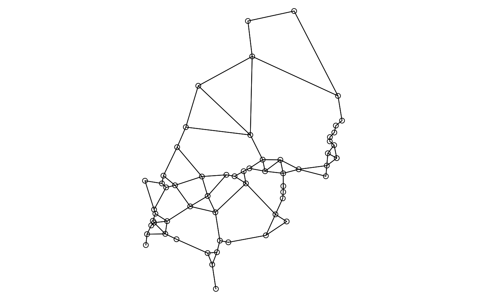
listw.gab <- spdep::nb2listw(nb.gab) dlist <- spdep::nbdists(nb.gab, xy) dlist <- lapply(dlist, function(x) 1/x) listw.d1 <- spdep::nb2listw(nb.gab, style = "W", glist=dlist) dlist <- lapply(dlist, function(x) 1/x^2) listw.d2 <- spdep::nb2listw(nb.gab, style = "W", glist=dlist)
Now we can quantify and test Moran’s I for each variable to test for spatial autocorrelation in response and predictor variables. For now, we’ll take the simple weights ‘listw.gab’.
spdep::moran.test(Dianthus.df$A, listw.gab)
##
## Moran I test under randomisation
##
## data: Dianthus.df$A
## weights: listw.gab
##
## Moran I statistic standard deviate = 2.881, p-value = 0.001982
## alternative hypothesis: greater
## sample estimates:
## Moran I statistic Expectation Variance
## 0.29180913 -0.01724138 0.01150691spdep::moran.test(Dianthus.df$IBD, listw.gab)
##
## Moran I test under randomisation
##
## data: Dianthus.df$IBD
## weights: listw.gab
##
## Moran I statistic standard deviate = 5.9689, p-value = 1.194e-09
## alternative hypothesis: greater
## sample estimates:
## Moran I statistic Expectation Variance
## 0.62709841 -0.01724138 0.01165320spdep::moran.test(Dianthus.df$IBR, listw.gab)
##
## Moran I test under randomisation
##
## data: Dianthus.df$IBR
## weights: listw.gab
##
## Moran I statistic standard deviate = 3.008, p-value = 0.001315
## alternative hypothesis: greater
## sample estimates:
## Moran I statistic Expectation Variance
## 0.30918167 -0.01724138 0.01177588spdep::moran.test(Dianthus.df$PatchSize, listw.gab)
##
## Moran I test under randomisation
##
## data: Dianthus.df$PatchSize
## weights: listw.gab
##
## Moran I statistic standard deviate = 3.4257, p-value = 0.0003066
## alternative hypothesis: greater
## sample estimates:
## Moran I statistic Expectation Variance
## 0.35490160 -0.01724138 0.01180103Questions:
- Which variables showed statistically signficant spatial autocorrelation?
- Which variables showed the strongest autocorrelation? Is this surprising?
Next, let’s test each model for autocorrelation in the residuals:
spdep::lm.morantest(mod.lm.IBD, listw.gab)
##
## Global Moran I for regression residuals
##
## data:
## model: lm(formula = A ~ IBD, data = Dianthus.df)
## weights: listw.gab
##
## Moran I statistic standard deviate = 2.9439, p-value = 0.00162
## alternative hypothesis: greater
## sample estimates:
## Observed Moran I Expectation Variance
## 0.28889983 -0.02854559 0.01162751spdep::lm.morantest(mod.lm.IBR, listw.gab)
##
## Global Moran I for regression residuals
##
## data:
## model: lm(formula = A ~ IBR, data = Dianthus.df)
## weights: listw.gab
##
## Moran I statistic standard deviate = 1.883, p-value = 0.02985
## alternative hypothesis: greater
## sample estimates:
## Observed Moran I Expectation Variance
## 0.18032443 -0.02296810 0.01165614spdep::lm.morantest(mod.lm.PatchSize, listw.gab)
##
## Global Moran I for regression residuals
##
## data:
## model: lm(formula = A ~ PatchSize + IBR, data = Dianthus.df)
## weights: listw.gab
##
## Moran I statistic standard deviate = 1.7484, p-value = 0.04019
## alternative hypothesis: greater
## sample estimates:
## Observed Moran I Expectation Variance
## 0.16223745 -0.02708922 0.01172530Quite a bit of the spatial autocorrelation in allelic richness can be explained by the spatial structure in the predictors IBR and PatchSize. There is still statistically significant spatial autocorrelation in the residuals, though it is not strong any more.
5. Fit spatial simultaneous autoregressive error models (SAR)
An alternative way to account for spatial autocorrelation in the residuals is spatial regression with a simultaneous autoregressive error model (SAR).
a) Fit and compare alternative SAR models
The method errorsarlm fits a simultaneous autoregressive model (‘sar’) to the error (‘error’) term of a ‘lm’ model.
This approach is based on spatial neighbours and weights. We have already defined them in three versions of a listw object. Let’s see which one fits the data best.
mod.sar.IBR.gab <- spatialreg::errorsarlm(A ~ PatchSize + IBR, data = Dianthus.df, listw = listw.gab) mod.sar.IBR.d1 <- spatialreg::errorsarlm(A ~ PatchSize + IBR, data = Dianthus.df, listw = listw.d1) mod.sar.IBR.d2 <- spatialreg::errorsarlm(A ~ PatchSize + IBR, data = Dianthus.df, listw = listw.d2) MuMIn::model.sel(mod.lm.IBR, mod.sar.IBR.gab, mod.sar.IBR.d1, mod.sar.IBR.d2)
## This method assumes the response is known - see manual page
## This method assumes the response is known - see manual page
## This method assumes the response is known - see manual page## Model selection table
## (Intrc) IBR PtchS family class listw df logLik AICc
## mod.sar.IBR.d1 4.067 0.09058 0.04142 () sarlm ls.d1 5 12.500 -13.9
## mod.sar.IBR.gab 4.063 0.09458 0.04081 () sarlm ls.gb 5 12.215 -13.3
## mod.sar.IBR.d2 4.055 0.10650 0.04133 () sarlm ls.d2 5 11.549 -12.0
## mod.lm.IBR 3.923 0.25520 gs(id) lm 3 8.603 -10.8
## delta weight
## mod.sar.IBR.d1 0.00 0.425
## mod.sar.IBR.gab 0.57 0.320
## mod.sar.IBR.d2 1.90 0.164
## mod.lm.IBR 3.10 0.090
## Abbreviations:
## family: gs(id) = 'gaussian(identity)'
## listw: ls.d1 = 'listw.d1', ls.d2 = 'listw.d2', ls.gb = 'listw.gab'
## Models ranked by AICc(x)The best model (‘mod.sar.IBR.d1’) is the one with (row-standardized) inverse-distance weights (‘listw.d1’). It is only slightly better than the model with the (row-standardized) binary weights (‘listw.gab’), whereas the nonspatial model and the one with (row-standardized) inverse squared distance weights have much less support.
b) Interpret best-fitting SAR model
Let’s have a look at the best model. With the argument Nagelkerke = TRUE, we request a pseudo R-squared.
summary(mod.sar.IBR.d1, Nagelkerke = TRUE)
##
## Call:spatialreg::errorsarlm(formula = A ~ PatchSize + IBR, data = Dianthus.df,
## listw = listw.d1)
##
## Residuals:
## Min 1Q Median 3Q Max
## -0.654613 -0.085961 0.016066 0.091687 0.389419
##
## Type: error
## Coefficients: (asymptotic standard errors)
## Estimate Std. Error z value Pr(>|z|)
## (Intercept) 4.067066 0.077809 52.2696 <2e-16
## PatchSize 0.041416 0.018554 2.2322 0.0256
## IBR 0.090578 0.094946 0.9540 0.3401
##
## Lambda: 0.22322, LR test value: 2.6442, p-value: 0.10393
## Asymptotic standard error: 0.13659
## z-value: 1.6343, p-value: 0.1022
## Wald statistic: 2.6708, p-value: 0.1022
##
## Log likelihood: 12.49972 for error model
## ML residual variance (sigma squared): 0.037595, (sigma: 0.19389)
## Nagelkerke pseudo-R-squared: 0.26613
## Number of observations: 59
## Number of parameters estimated: 5
## AIC: -14.999, (AIC for lm: -14.355)- Again, PatchSize is significant but not IBR.
- The section starting with ‘Lamba’ summarizes the fitted spatial autocorrelation term. It is not statistically significant (p-value = 0.1039 for the Likelihood Ratio test LR).
6. Spatial filtering with MEM using package ‘spmoran’
See tutorial for ‘spmoran’ package: https://arxiv.org/ftp/arxiv/papers/1703/1703.04467.pdf
Both GLS and SAR fitted a spatially correlated error structure of a relatively simple form to the data. Gene flow could be more complex and for example, could create spatial autocorrelation structure that is not the same in all directions or in all parts of the study area. Moran Eigenvector Maps (MEM) allows a more flexible modeling of spatial structure in the data. In spatial filtering, we use MEM spatial eigenvectors to account for any spatial structure while fitting and testing the effect of our predictors.
a) Default method
The new package spmoran makes this really easy. First, we create the MEM spatial eigenvectors. This implies defining neighbors and weights, but this is well hidden in the code below. The function meigen here takes the coordinates, calculates a minimum spanning tree (so that each site has at least one neighbour), and finds the maximum distance ‘h’ from the spanning tree. It then calculates neighbor weights as exp(-dij / h).
Note: if you have many sites (> 200), the function meigen_f may be used instead of meigen, it should even work for >1000 sites.
The function esf then performs the spatial filtering. Here it uses stepwise selection of MEM spatial eigenvectors using an R-squared criterion (fn = "r2").
# lm model: using truncated distance matrix (max of min spanning tree distance) meig <- spmoran::meigen(coords=xy)
## 9/59 eigen-pairs are extractedsfd.res <- spmoran::esf( y=Dianthus.df$A, x=Dianthus.df[,c("PatchSize", "IBR")], meig=meig, fn = "r2" )
## 5/9 eigenvectors are selectedThe objects created by functions ‘meigen’ and ‘esf’ contain a lot of information:
-
meigW: a list returned by function ‘meigen’, with the following attributes:
- sf: Matrix of retained spatial eigenvectors.
- ev: Eigenvalues of retained spatial eigenvectors.
- ev_full: All (n - 1) eigenvalues.
-
sfd.res: a list returned by function ‘esf’, with the following attributes:
- b: Table with regression results for predictors X.
- r: Table with regression results the selected MEM spatial eigenvectors (based on step-wise eigenvector selection).
- e: Summary statistics for the entire model.
- vif: Variance inflation factors.
- sf: Fitted spatially dependent component (i.e., fitted value based on significant MEM spatial eigenvectors)
- pred: Fitted values.
- resid: Residuals.
Let’s look at the table ‘b’ with regression results for the predictors first:
sfd.res$b
## Estimate SE t_value p_value
## (Intercept) 4.08678879 0.06759658 60.4585130 3.838659e-49
## PatchSize 0.03642554 0.01673612 2.1764625 3.417603e-02
## IBR 0.04687286 0.08602602 0.5448685 5.882188e-01Again, PatchSize is statistically significant but not IBR.
Next, we look at the table ‘r’ with regression results for MEM spatial eigenvectors:
sfd.res$r
## Estimate SE t_value p_value
## sf6 0.5938646 0.1782765 3.331144 0.001613967
## sf1 0.3962440 0.1788408 2.215624 0.031207615
## sf7 -0.4065267 0.1895836 -2.144313 0.036795842
## sf3 -0.3474148 0.1760289 -1.973624 0.053854181
## sf5 -0.3290397 0.1757533 -1.872168 0.066922529Five MEM spatial eigenvectors were important enough to be included in the model. Here they are ranked by their (absolute value of) slope coefficient, and thus by the strength of their association with the response variable. Eigenvector ‘sf6’ was by far the most important.
Note: some eigenvectors are included despite having a p-value > 0.05. This may have two reasons. First, the eigenvectors were selected without taking into account predictors X. Second, a different test was used in the stepwise eigenvector selection. The type of test can be specified with an argument fn (see ‘?esf’ helpfile and ‘spmoran’ tutorial).
Finally, let’s look at the summary results for the fitted model:
sfd.res$e
## stat
## resid_SE 0.1728755
## adjR2 0.4374576
## logLik 24.1369653
## AIC -30.2739307
## BIC -11.5760937Here, ‘adjR2’ is rather high (0.437), but this includes the selected MEM spatial eigenvectors!
b) Using a custom connectivity matrix
We know already that listw.d1 fit the data well, so let’s re-run the model with our own definition of spatial weights. With the funciton ‘listw2mat’, we convert from listw format to a full connnectivity matrix.
## Note:## cmat is symmetrized by ( cmat + t( cmat ) ) / 2## 27/59 eigen-pairs are extractedsfw.res <- spmoran::esf( y=Dianthus.df$A, x=Dianthus.df[,c("PatchSize", "IBR")], meig=meigw, fn = "r2" )
## 15/27 eigenvectors are selectedsfw.res$b
## Estimate SE t_value p_value
## (Intercept) 4.07534252 0.07375191 55.2574522 3.989818e-40
## PatchSize 0.03114008 0.01772391 1.7569529 8.639209e-02
## IBR 0.05720775 0.09657088 0.5923913 5.568418e-01tibble::as_tibble(sfw.res$r)
## # A tibble: 15 x 4
## Estimate SE t_value p_value
## <dbl> <dbl> <dbl> <dbl>
## 1 0.666 0.171 3.90 0.000348
## 2 -0.404 0.172 -2.34 0.0240
## 3 -0.509 0.160 -3.19 0.00273
## 4 -0.424 0.171 -2.48 0.0175
## 5 0.358 0.160 2.24 0.0307
## 6 -0.314 0.167 -1.88 0.0668
## 7 0.284 0.176 1.62 0.113
## 8 -0.185 0.156 -1.18 0.243
## 9 -0.160 0.164 -0.973 0.336
## 10 -0.244 0.158 -1.54 0.131
## 11 0.260 0.163 1.60 0.117
## 12 0.358 0.184 1.94 0.0588
## 13 0.332 0.177 1.88 0.0679
## 14 -0.237 0.162 -1.47 0.151
## 15 0.215 0.159 1.35 0.185sfw.res$e
## stat
## resid_SE 0.1520845
## adjR2 0.5646300
## logLik 38.1354212
## AIC -38.2708424
## BIC 1.2023691Note: the messages tell us that ‘cmat’ has been made symmetric before analysis, that 27 out of 59 MEM spatial eigenvector (and their eigenvalues, hence ‘pairs’) were retained initially and subjected to stepwise selection, which then returned 15 statistically significant MEM eigenvectors that were included in the regression model with the predictor variables X (PatchSize and IBR).
Questions:
- Does this model fit the data better? Look for a lower AIC. In addition, you can compare the adjusted R-squared.
- What could cause a difference in model performance?
- Does this affect the results for PatchSize and IBR? Compare both parameter estimates and p-value between two two models.
c) Plot spatial eigenvectors
So far, we have treated the MEM spatial eigenvectors as a black box. What kind of patterns do they represent?
First, we plot all the selected (significant) eigenvectors. A convenient way to do so is converting to a SpatialPointsDataFrame and then use the function ‘spplot’.
Here we need tweak the column names of the eigenvectors, which are called “X1”, “X2” etc., to match the row names of table ‘sf.res$r’, which uses “sf1”, “sf2” etc.
- In the first line, we create a data frame ‘SF’ that combines the coordinates from ‘xy’ with the eigenvectors from ‘meigw’. By specifying
sf=meigw$sf, the column names will be prefaced by ‘sf.’, so that “X1” becomes “sf.1”. - With the function
gsub, we substitute “.” by an empty vector "“, i.e., we remove the period from the name, so that”sf.1" becomes “sf1”. This is a bit tricky because of the special meanings of ‘.’: we need to escape (here we use “[.]”) to indicate that ‘.’ should be interpreted and matched literally as a period symbol, not as a wildcard that matches any character. Functionsubsubstitutes the first occurrence of the symbol, whereasgsubsubstitutes all occurrences.
SF <- data.frame(xy, sf=meigw$sf) names(SF) <- gsub("[.]", "", names(SF)) sp::coordinates(SF) <- ~ x + y sp::spplot(SF, row.names(sfw.res$r), colorkey = TRUE)
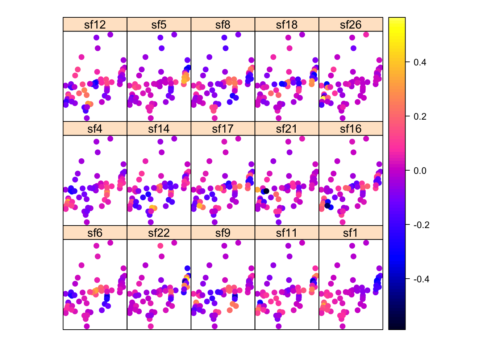
The panel starts at the bottom left, so that the most important spatial eigenvector (sf6) is plotted at the bottom left, the second most important (sf22) second from left, etc.
The smallest numbers are patterns with the largest spatial scale (sf1), which here shows a gradient from East to West. The most important eigenvector (sf6) shows a finer-scale pattern with the highest values (yellow) in the center, lowest values East and West, and intermediate value North and South.
However, these patterns individually are not meaningful. More importantly, we can plot the total spatial component in the response as a weighted sum of these component patterns, where the weights correspond to the regression coefficients in table ‘sf.res$r’. Here we create a panel with two plots, the modeled spatial components ‘sf’ on the left and the response ‘A’ on the right (the mean has been removed to make values comparable).
SF@data$sf <- sfw.res$sf SF@data$A <- scale(Dianthus.df$A, scale = FALSE) sp::spplot(SF, c("sf", "A"), colorkey = TRUE)
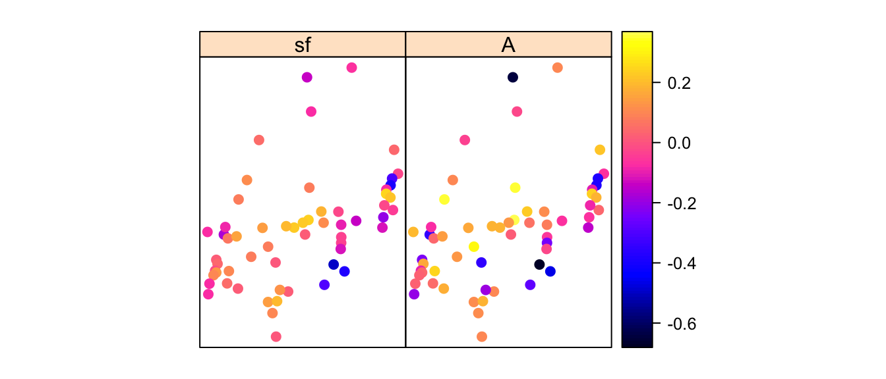
Obviously, a big part of the variation in allelic richness is already captured by ‘sf’. In essence the model then tries to explain the difference between these two sets of values by the predictors “PatchSize” and “IBR”.
Let’s quantify the correlation of this spatial component with allelic richness, and compare the correlation between the two models:
cor(Dianthus.df$A, data.frame(sfd=sfd.res$sf, sfw=sfw.res$sf))
## sfd sfw
## [1,] 0.6252594 0.7720016With the default method (defining neighbors based on a distance cut-off), the spatial component modeled by the significant MEM spatial eigenvectors showed a correlation of 0.625 with the response variable. Using a Gabriel graph with inverse distance weights increased this correlation to 0.772.
This means that the spatial eigenvectors derived from the Gabriel graph were more effective at capturing the spatial variation in allelic richness than the default method. This spatial component is then controlled for when assessing the relationship between allelic richness and the predictors (PatchSize and IBR).
d) Random effect model
The previous model selected 15 MEM spatial eigenvectors, and thus fitted 15 additional models. Just like the random effects for family and population in Week 6 lab, we can save a few parameters here by fitting the set of MEM eigenvectors as a random effect. This is done by the function ‘resf’.
sfr.res <- spmoran::resf( y=Dianthus.df$A, x=Dianthus.df[,c("PatchSize", "IBR")], meig = meigw, method = "reml" ) sfr.res$b
## Estimate SE t_value p_value
## (Intercept) 4.05889381 0.06856506 59.197696 0.00000000
## PatchSize 0.04215982 0.01675185 2.516726 0.01531481
## IBR 0.10077818 0.08727232 1.154755 0.25402637tibble::as_tibble(sfr.res$r)
## # A tibble: 27 x 3
## Estimate SE t_value
## <dbl> <dbl> <dbl>
## 1 0.164 0.121 1.35
## 2 -0.0408 0.121 -0.338
## 3 0.0324 0.120 0.271
## 4 -0.0999 0.122 -0.820
## 5 0.118 0.126 0.938
## 6 0.243 0.125 1.95
## 7 0.0281 0.126 0.224
## 8 0.0691 0.126 0.550
## 9 -0.174 0.124 -1.40
## 10 -0.0201 0.126 -0.160
## # … with 17 more rowssfr.res$e
## stat
## resid_SE 0.1636501
## adjR2(cond) 0.4571174
## logLik 4.7082457
## AIC 2.5835085
## BIC 15.0487332sfr.res$s
## Estimate
## spcomp_SE 0.1739337
## spcomp_Moran.I/max(Moran.I) 0.7587574As in Week 6 lab, the conditional R-squared is the variance explained by the fixed effects (PatchSize and IBR) and the random effects (significant MEM spatial eigenvectors) together. It is adjusted for the number of effects that were estimated.
Note: we can’t compare AIC with the previous models, as the model was fitted with ‘reml’.
We get an additional output ‘sfr.res$s’ with two variance parameters:
- spcomp_SE: standard error of the spatial component.
- spcomp_Moran.I/max(Moran.I): Moran’s I of the spatial component, rescaled by the maximum possible value. From the help file: “Based on Griffith (2003), the scaled Moran’I value is interpretable as follows: 0.25-0.50:weak; 0.50-0.70:moderate; 0.70-0.90:strong; 0.90-1.00:marked.”
7. Fit spatially varying coefficients model with package ‘spmoran’
See: https://arxiv.org/ftp/arxiv/papers/1703/1703.04467.pdf
Now comes the coolest part!
So far, we have fitted the same model for all sites. Geographically weighted regression (GWR) would allow relaxing this. Spatial filtering with MEM can be used to accomplish the same goal, and the ‘spmoran’ tutorial calls this a ‘Spatially Varying Coefficients’ model (SVC). The main advantage is that we can visualize how the slope parameter estimates, and their p-values, vary across the study area! This is a great exploratory tool that can help us better understand what is going on.
Model with PatchSize and IBR
We fit the model with ‘resf_vc’.
rv_res <- spmoran::resf_vc( y=Dianthus.df$A, x = Dianthus.df[,c("PatchSize", "IBR")], xconst = NULL, meig = meigw, method = "reml", allsvc=TRUE)
## [1] "------- Iteration 1 -------"
## [1] "1/3"
## [1] "2/3"
## [1] "3/3"
## [1] "rlogLik: 6.898"
## [1] "------- Iteration 2 -------"
## [1] "1/3"
## [1] "2/3"
## [1] "3/3"
## [1] "rlogLik: 7.525"
## [1] "------- Iteration 3 -------"
## [1] "1/3"
## [1] "2/3"
## [1] "3/3"
## [1] "rlogLik: 7.602"
## [1] "------- Iteration 4 -------"
## [1] "1/3"
## [1] "2/3"
## [1] "3/3"
## [1] "rlogLik: 7.609"
## [1] "------- Iteration 5 -------"
## [1] "1/3"
## [1] "2/3"
## [1] "3/3"
## [1] "rlogLik: 7.61"
## [1] "------- Iteration 6 -------"
## [1] "1/3"
## [1] "2/3"
## [1] "3/3"
## [1] "rlogLik: 7.61"
## [1] "------- Iteration 7 -------"
## [1] "1/3"
## [1] "2/3"
## [1] "3/3"
## [1] "rlogLik: 7.61"Instead of one slope estimate for each predictor, we now get a different estimate for each combination of parameter and site (sounds like overfitting?). Here’s a summary of the distbiution of these estimates.
summary( rv_res$b_vc )
## (Intercept) PatchSize IBR
## Min. :4.121 Min. :0.0007725 Min. :-0.812764
## 1st Qu.:4.121 1st Qu.:0.0280929 1st Qu.:-0.077299
## Median :4.121 Median :0.0453303 Median : 0.057376
## Mean :4.121 Mean :0.0457974 Mean :-0.001217
## 3rd Qu.:4.121 3rd Qu.:0.0639628 3rd Qu.: 0.138549
## Max. :4.121 Max. :0.0979951 Max. : 0.336830The slope estimate for PatchSize varied between 0 and 0.098, with a mean of 0.046. The slope estimate for the ‘IBR’ term varied between -0.81 and 0.34, with a mean very close to 0! That is an astounding range of variation. Keep in mind that we really expect a positive relationship, there is no biological explanation for a ngeative relationship.
Here is a similar summary of the p-values:
summary( rv_res$p_vc )
## (Intercept) PatchSize IBR
## Min. :0 Min. :0.0000077 Min. :0.0000091
## 1st Qu.:0 1st Qu.:0.0149433 1st Qu.:0.0780294
## Median :0 Median :0.1058639 Median :0.2391374
## Mean :0 Mean :0.2328291 Mean :0.3197722
## 3rd Qu.:0 3rd Qu.:0.3833774 3rd Qu.:0.5319126
## Max. :0 Max. :0.9839952 Max. :0.9058305For both variables, most sites do not show a significant effect (i.e., only few sites show a p-value < 0.05).
We could print these results by site (type rv_res$b_vc or rv_res$p_vc). Even better, we can plot them in space. We start with combining the data (‘Dianthus.df’) and the results into one data frame ‘Results’. By specifying b=rv_res$b_vc and p=rv_res$p_vc, R will create column names that start with ‘b’ or ‘p’, respectively.
Result <- data.frame(Dianthus.df, b=rv_res$b_vc, p=rv_res$p_vc) names(Result)
## [1] "A" "IBD" "IBR" "PatchSize"
## [5] "System" "Longitude" "Latitude" "x"
## [9] "y" "b..Intercept." "b.PatchSize" "b.IBR"
## [13] "p..Intercept." "p.PatchSize" "p.IBR"Let’s start with PatchSize. Here, we first plot PatchSize in space, with symbol size as a function of patch size. In a second plot, we color sites by statistical significance and the size of the symbols represents the parameter estimate of the regression slope coefficient for Patch Size. The layer ‘coord_fixed’ keeps controls the aspect ratio between x- and y-axes.
require(ggplot2) ggplot(as.data.frame(Result), aes(x, y, size=PatchSize)) + geom_point(color="darkblue") + coord_fixed() ggplot(as.data.frame(Result), aes(x, y, col=p.PatchSize < 0.05, size=b.PatchSize)) + geom_point() + coord_fixed()
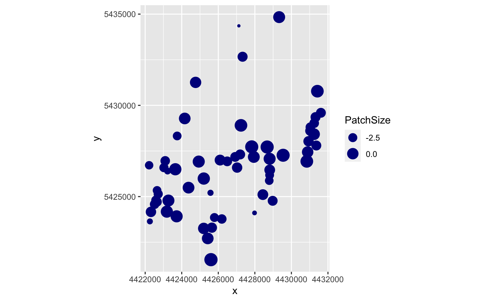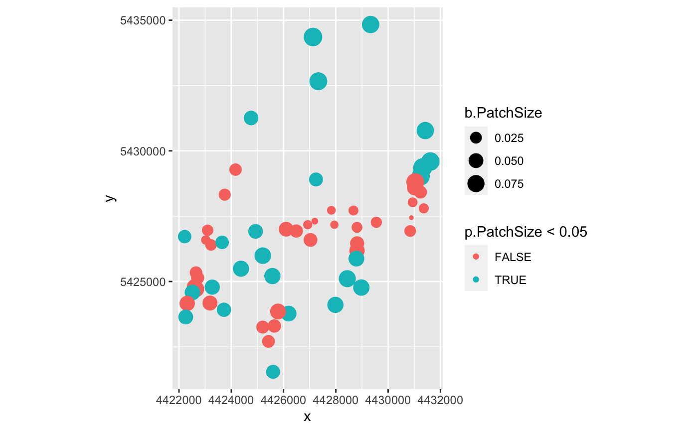
Let’s do the same for ‘IBR’:
require(ggplot2) ggplot(as.data.frame(Result), aes(x, y, size=IBR)) + geom_point(color="darkgreen") + coord_fixed() ggplot(as.data.frame(Result), aes(x, y, col=p.IBR < 0.05, size=b.IBR)) + geom_point() + coord_fixed()
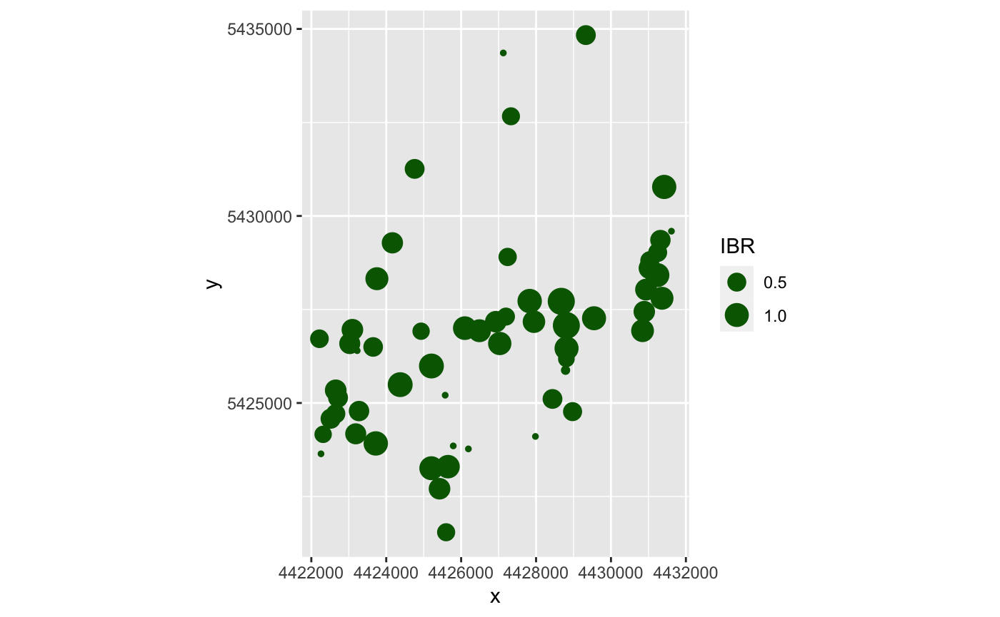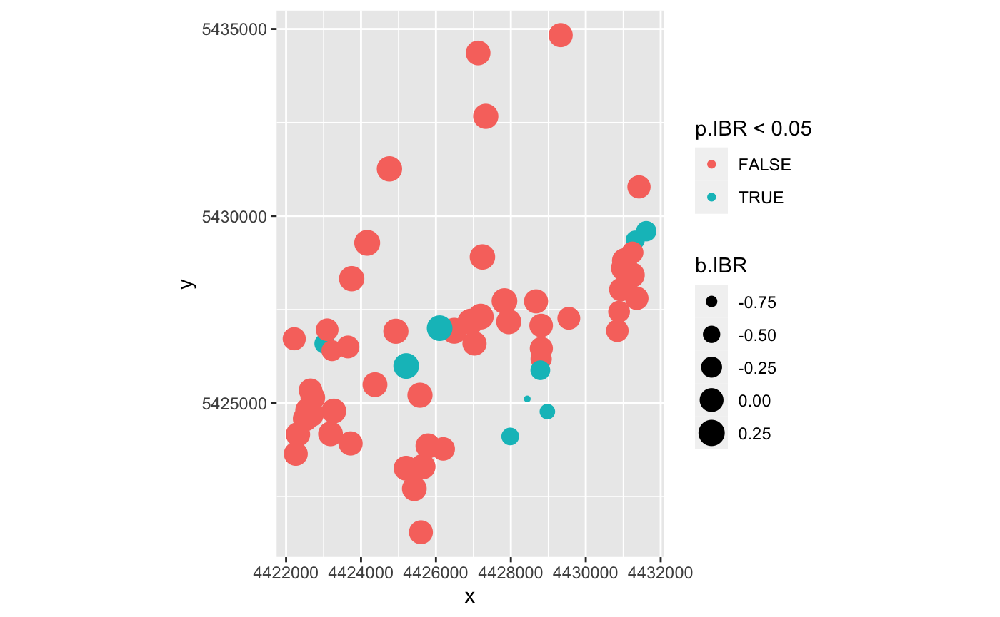
- The very small dots in the first map are the ungrazed patches.
- From the second map, it looks like the significant values were the one with negative slope estimates, for which we don’t have a biological interpretation.
Model with IBR only
Keep in mind that ‘IBR’ and ‘PatchSize’ showed a strong correlation. The parameter estimates could therefore depend quite a bit on the other variables. To help with the interpretation, let’s repeat the last analysis just with ‘IBR’, without ‘PatchSize’.
rv_res <- spmoran::resf_vc( y=Dianthus.df$A, x = Dianthus.df[,c("IBR")], xconst = NULL, meig = meigw, method = "reml", allsvc=TRUE)
## [1] "------- Iteration 1 -------"
## [1] "1/2"
## [1] "2/2"
## [1] "rlogLik: 6.51"
## [1] "------- Iteration 2 -------"
## [1] "1/2"
## [1] "2/2"
## [1] "rlogLik: 6.544"
## [1] "------- Iteration 3 -------"
## [1] "1/2"
## [1] "2/2"
## [1] "rlogLik: 6.544"summary( rv_res$b_vc )
## (Intercept) V1
## Min. :3.811 Min. :-0.2388
## 1st Qu.:3.915 1st Qu.: 0.1544
## Median :3.938 Median : 0.2589
## Mean :3.939 Mean : 0.2111
## 3rd Qu.:3.966 3rd Qu.: 0.3203
## Max. :4.045 Max. : 0.4317Now the range of slope estimates is smaller, most sites have a positive estimate, and the mean is approx. 0.21.
summary( rv_res$p_vc )
## (Intercept) V1
## Min. :0 Min. :0.000209
## 1st Qu.:0 1st Qu.:0.004605
## Median :0 Median :0.032435
## Mean :0 Mean :0.170820
## 3rd Qu.:0 3rd Qu.:0.223984
## Max. :0 Max. :0.983408Also, a larger proportion of sites nows has p-values < 0.05.
Let’s plot the results onto a gray-scale, stamen terrain map to facilitate interpretation. Note: here the zoom level zoom = 12 covers the entire study area, whereas the default value would actually cut off a large number of sites. We use the argument force=TRUE to force the map to be downloaded again (otherwise the argument color="bw" may not have an effect if we already downloaded the terrain map in color).
Result <- data.frame(Dianthus.df, b=rv_res$b_vc, p=rv_res$p_vc, resid=rv_res$resid) names(Result)
## [1] "A" "IBD" "IBR" "PatchSize"
## [5] "System" "Longitude" "Latitude" "x"
## [9] "y" "b..Intercept." "b.V1" "p..Intercept."
## [13] "p.V1" "resid"ggmap::ggmap(get_stamenmap(bbox, maptype = "terrain", color="bw", force=TRUE, zoom=12)) + geom_point(aes(x = Longitude, y = Latitude, col=p.V1 < 0.05, size=b.V1), data = Result)
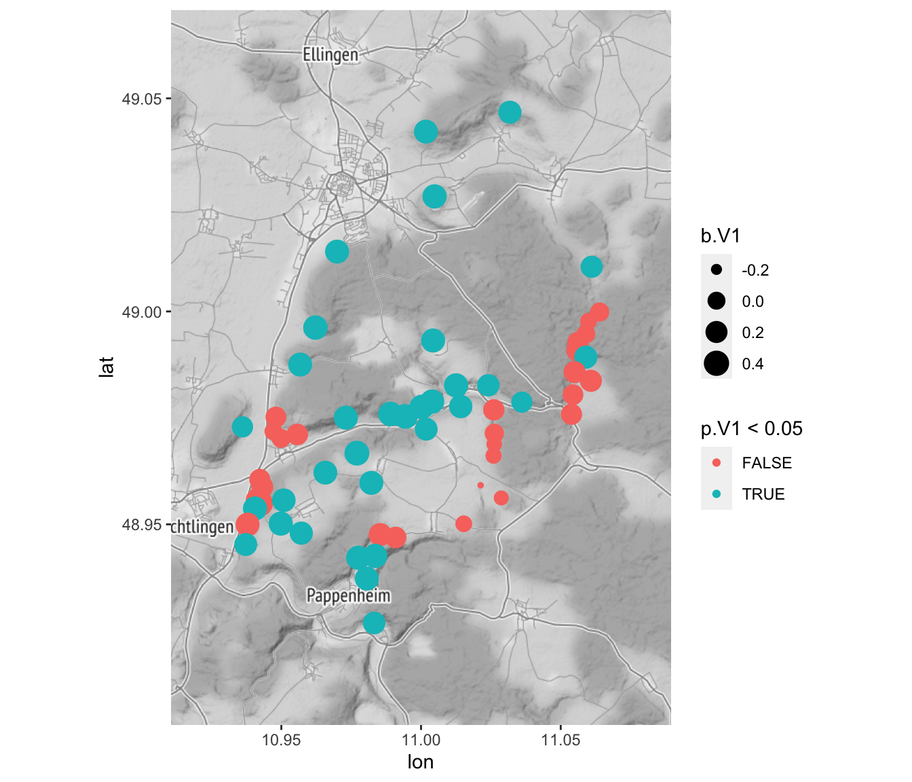
This is a very different map of results!
- Most sites now show significant effects.
- The sites with larger positive estimates show significant effects, whereas those with small or negative estimates show non-significant effects.
- There are 3 - 4 clusters of sites where the IBR models is not effective at explaining variation in allelic richness: in the very East, in the South-East, and one area in the South-West.
- Knowing the study area, these are distinct regions (e.g. valleys) that may suggest further biological explanations.
8. Conclusions
- We moved from pair-wise distance matrices (link-based) to node-based analysis by integrating the explanatory distance matrices for IBD and IBR into patch-level connectivity indices Si (neighborhood analysis).
- We found no support for the IBD model, and strong support for the IBR model when tested without additional predictors.
- The site-level predictors ‘PatchSize’ (log(‘Ha’)) was strongly correlated with our IBR model, and when PatchSize was added to the model, ‘IBR’ was no long statistically significant and its slope estimate changed considerably.
- The MEM analogue to spatially weighted regression showed very different patterns for ‘IBR’ depending on whether or not ‘PatchSize’ was included in the model. Withouth ‘PatchSize’, ‘IBR’ showed significant positive correlation with allelic richness across the study area, except for three sub-areas.
- In practical terms, this may suggest that the management strategy of maintaining plant functional connectivity through shepherding seems to be working for this species overall, though there are three parts of the study area where this may not be sufficient to maintain gene flow.
- The evidence is not conclusive, however, the observed patterns could also be explained by population size, which in this species seems to be associated with patch size. This makes sense if smaller patches contain smaller populations with higher rates of genetic drift.
9. R Exercise Week 7
The Pulsatilla vulgaris dataset that we’ve been analyzing in the R exercises has two variables that were observed or calculated for each sampled mother plant (i.e., those plants from which seeds were collected; see DiLeo et al. 2017, Journal of Ecology):
-
flower.density: he number of flowers within 2 m of the mother plant. A radius of 2 m around mother plants was chosen as it gave the strongest correlation with selfing rates and pollination distances compared to lower (1 m) and higher (3 m) tested values. -
mom.isolation: the mean distance of the mother plant to all other plants within the population (mean neighbour distance).
We would expect the following:
- A negative relationship, where floral density within 2 m of isolated mother plants is low.
- Likely (right-)skewed distributions for both variables.
- Positive spatial autocorrelation of both variables within each patch.
- Values within each patch likely more similar than between patches.
Consider how the points listed above may violate different assumptions of a linear regression model fitted with least squares (lm). How can we test and account for these potential violations and fit a valid model?
Task: Test the regression of flower density on the isolation of the sampled mother plants of Pulsatilla vulgaris. Account for the sampling of multiple mothers from each of seven patches, and for residual spatial autocorrelation (if statistically significant).
Hints:
Load packages: You may want to load the packages
dplyr,ggplot2and ‘nlme’. Alternatively, you can use::to call functions from packages.Import data, add spatial coordinates. Use the code below to import the data, extract moms, add spatial coordinates, and remove replicate flowers sampled from the same mother.
library(dplyr) # Dataset with variables 'flower.density' and 'mom.isolation' for each mom: Moms <- read.csv(system.file("extdata", "pulsatilla_momVariables.csv", package = "LandGenCourse")) # Dataset with spatial coordinates of individuals: Pulsatilla <- read.csv(system.file("extdata", "pulsatilla_genotypes.csv", package = "LandGenCourse")) Adults <- Pulsatilla %>% filter(OffID == 0) # Combine data Moms <- left_join(Moms, Adults[,1:5]) # Remove replicate flowers sampled from the same mother Moms <- Moms %>% filter(OffID == 0)
Explore data. How many mother plants are there in total, and per population? Are the distributions of
flower.densityand ofmom.isolationskewed?Create scatterplots: Use ggplot to create a scatterplot of
flower.density(y) againstmom.isolation(x). Modify the plot withcoord_transto apply a log-transformation to each axis. Will this make the relationship more linear? - Note: usinggeom_smoothtogether withcoord_transcan create problems. You may adapt the following code to plot two ggplot-type plots side-by-side:gridExtra::grid.arrange(myPlot1, myPlot2, nrow = 1)Scatterplot with line: Instead of using coord_trans, create a scatterplot with log-transformed variable (log(y) vs. log(x)). Add a regression line.
-
Fit non-spatial models: Adapt code from section 4 to fit two models with the response
log(flower.density)and the fixed factorlog(mom.isolation), using funcions from packagenmle:- Basic model: you can fit a simple model by adapting this code:
nlme::gls(Response ~ FixedEffect, data=Data, method=REML) - Random effect: add a random effect for Population, use nlme::lme instead of gls.
nlme::lme(Response ~ FixedEffect, random = ~ 1| RandomEffect, data=Data, method=REML) - For now, omit the
correlationterm (no spatial correlation structure).
- Basic model: you can fit a simple model by adapting this code:
-
Plot residual variograms: Plot variograms for the two models. Inspect the x-axes of the plots. What is the effect of including the random effect
Populationon the fitting of the variogram? Recall the sampling design. Was there spatial autocorrelation within populations? Hints:- Check the variable names in
Momsto adapt the names of the x and y coordinates as needed in the termform= ~ xcoord + ycoord. - Print each variogram object to check the number of pairs per lag. Ideally, this should be around 100.
- These variogram plots are trellis plots. Fortunately, you can again use
gridExtra::grid.arrangeto plot them side by side. Write each plot into an object first.
- Check the variable names in
Add correlation structure: Add a term of the type
correlation = nlme::corExp(form = ~ x + y, nugget=T)to the mixed model fitted with REML. Adapt code from section 4.b to evaluate different variogram functions (exponential, spherical, Gaussian, ratio) and use AIC (with REML) to choose the best-fitting variogram model.Check residual plots: For the best model (fitted with REML) and check the residuals. Plot a variogram of the residuals, and the fitted variogram.
Test fixed effect: Refit the best model with maximum likelihood to test the fixed effect with
car::Anova. Give the model a new name to keep them apart and avoid overwriting.Determine the marginal R-squared. For the best model (fitted with REML), use
MuMIn::r.squaredGLMMto determine the marginal and conditional R-squared.
Questions: Justify your answers to the following questions:
- Did you find a statistically significant, negative relationship between local floral density and mom isolation? If so, how strong was it?
- Was it necessary to account for skewness in both variables?
- Was it necessary to account for spatial autocorrelation?
- Was it necessary to account for population?